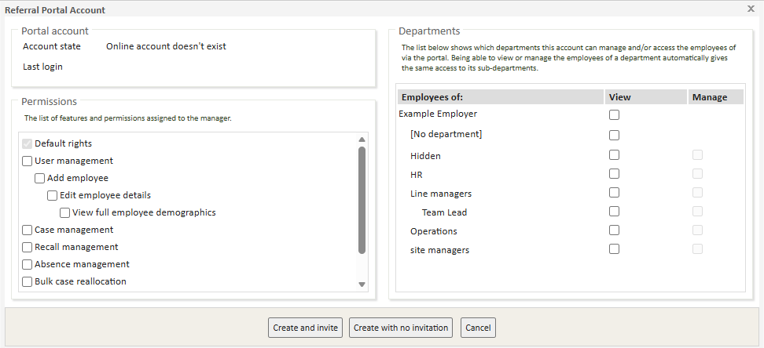
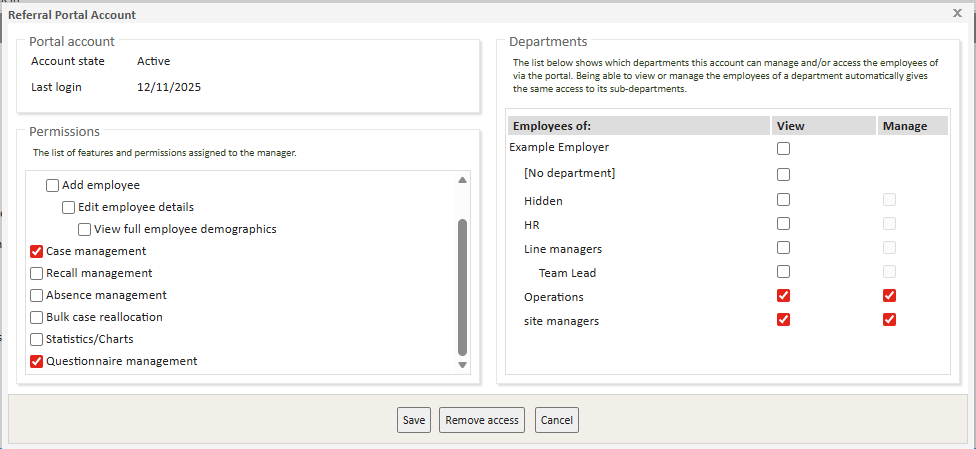
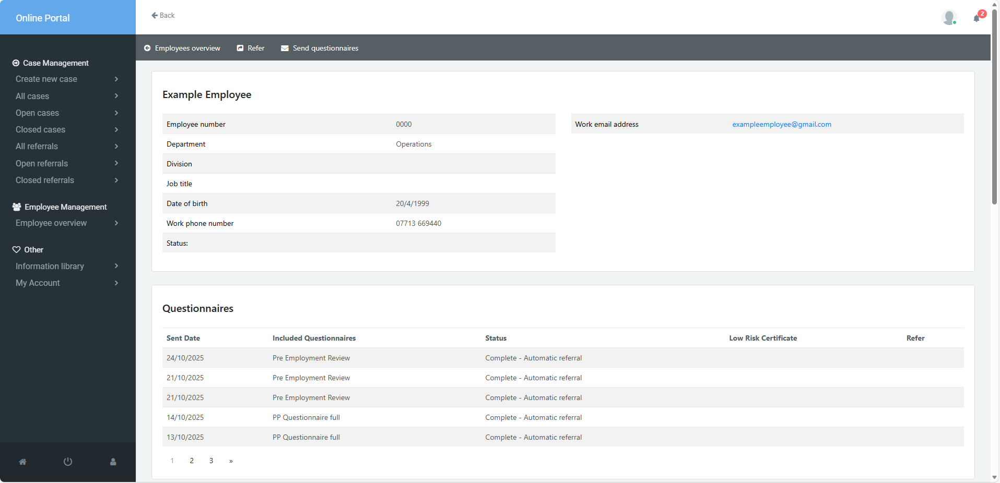
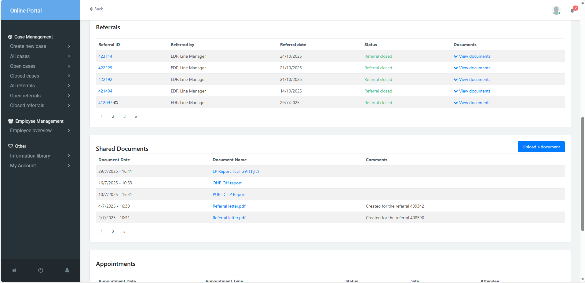
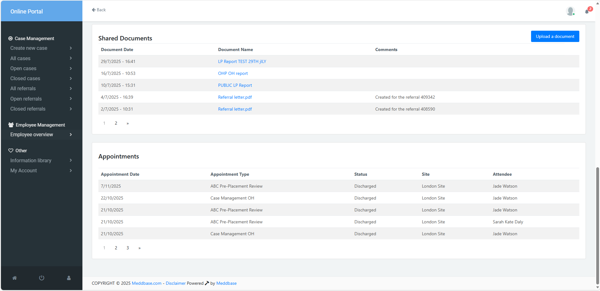

Previously, Silent Matching allowed referring managers to add employees and see full demographic details. If a match was found, the system would silently associate the referral with the existing employee record, preventing duplicate patient entries in Meddbase. However, all users with the Case Management permission were able to do this by default.
The latest update introduces granular controls that give administrators greater flexibility over how managers can search for and add employees through the portal.
Permissions to control the ability to Add a New Employee at the time of raising a referral are nested under User Management, which acts as the top-level permission.
This article explains how to:
This article focuses on the behaviour of the feature when only the Case Management permission is granted on a Manager Profile.
In Meddbase, a Manager is defined as a patient record that has been granted access to the Occupational Health (OH) Portal. This access allows them to make referrals or book appointments on behalf of employees within their organisation. The manager’s access level and available actions are determined by the permissions assigned to their portal account.
When determining who should be set up as a Manager, consider the following:
To configure an individual manager’s access and permissions for the Occupational Health (OH) Portal, locate the manager’s patient record in Meddbase. Then, select Referral Portal > Portal Account Settings to open their portal configuration options.
If this is a new manager, the Account State will be set to “Online account doesn’t exist.” You will need to configure their permissions and department view. Then, you can choose one of two options:
Create and Invite – Creates the portal account and sends an email invitation to the manager, who will need to validate their account.
Create with No Invitation – Creates the portal account without sending a notification to the manager.
It is possible to import permissions, either for new managers or update existing, on mass. Alternatively, managers can self register via the OH Portal using a unique code provided, however further permissions will still need to be configured by a Meddbase user. To learn more about this, please see Signing up to the Occupational Health Portal and Case Management .

Permissions control the features and actions a manager can conduct within the OH Portal. Some of these permissions' functionality is further controlled by departments. The table below outlines the permission name, a description of the functionality and if the ability to view departments is required in addition.
| Permission | Description | Department Dependency |
| User Management | Allows a manager to create other referral portal users for new or existing employees within a named department. Enabling User Management acts as a parent permission, automatically granting the following three associated permissions in cascade. | Requires “View Departments” as a minimum. |
| *Add Employee | Enables a manager to create a new employee record through the portal. Enabling Add Employee acts as a parent permission, automatically granting the following two associated permissions in cascade. | Works without departments. |
| **Edit Employee Details | Allows editing of employee demographic details for employees within a named department. Enabling Edit Employee Details acts as a parent permission, automatically granting the below permission in cascade. | Requires “View Departments” as a minimum. |
| ***View Full Demographics | Displays full demographic data for employees within a named department. | Requires “View Departments” as a minimum. |
| Case Management | Enables referral creation and case management. This is the minimum required permission to allow a manager to make referrals within the OH portal. | Works without departments if cross-department search is enabled.. |
| Recall Management | Allows viewing and actioning of recalls for individual employees. | Requires “View Departments” as a minimum. |
| Bulk Case Reallocation | Enables reallocation of multiple cases for one employee to another named manager. | Requires “View Departments” as a minimum. |
| Statistics / Charts | Grants access to pre-built Management Information reports. | Requires “View Departments” as a minimum. |
| Questionnaire Management | Allows the sending and managing of Pre-Placement Questionnaires (PPQ). | Requires “View Departments” as a minimum. |
Meddbase uses a department hierarchy structure to control visibility and access across different areas of an organisation. Departments define which employees a manager can view within the OH Portal.
By assigning managers and employees to specific departments, administrators can ensure that managers only have access to the employees they are responsible for. This provides clear boundaries and maintains confidentiality between departments.
View – Allows the manager to view employees and perform actions based on the above permissions granted.
Manage – Grants the manager full management rights within the assigned department(s) including notifications of PPQ outcomes and general notifications for the employees they manage.
Departments therefore serve as a key control mechanism within Meddbase, helping organisations manage access securely and ensure that data is only visible to the appropriate users.
The image below shows Referral Poral Account settings for a manager who is currently active. Only 2 permissions are granted, Case Management and Questionnaire Management.

This manager is able to create new cases and track all referrals made for their employees within the department they can view.
In the Employee Overview page, a manager can view and perform the following actions on an individual employee basis:
Raise and track referrals for employees within the departments they can view.
Send and manage questionnaires for employees within the departments they can view.
View shared documents provided by the OH provider.
View all associated appointments for those employees.
Below is a series of screenshots demonstrating what the above will look like, using all test patient data.



Note: If Cross-Department Search is enabled at the Chamber level, managers with the Case Management permission can temporarily search for and refer employees outside of their assigned departments. Access is restricted to the duration of the referral, and managers cannot view other referrals or additional employee information beyond what is required for the referral.